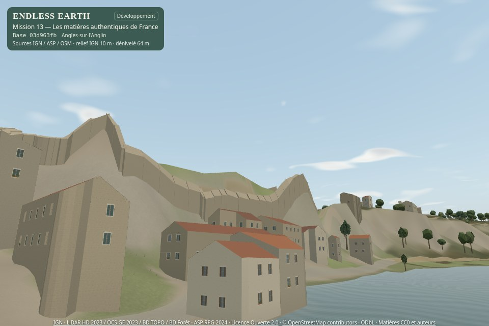
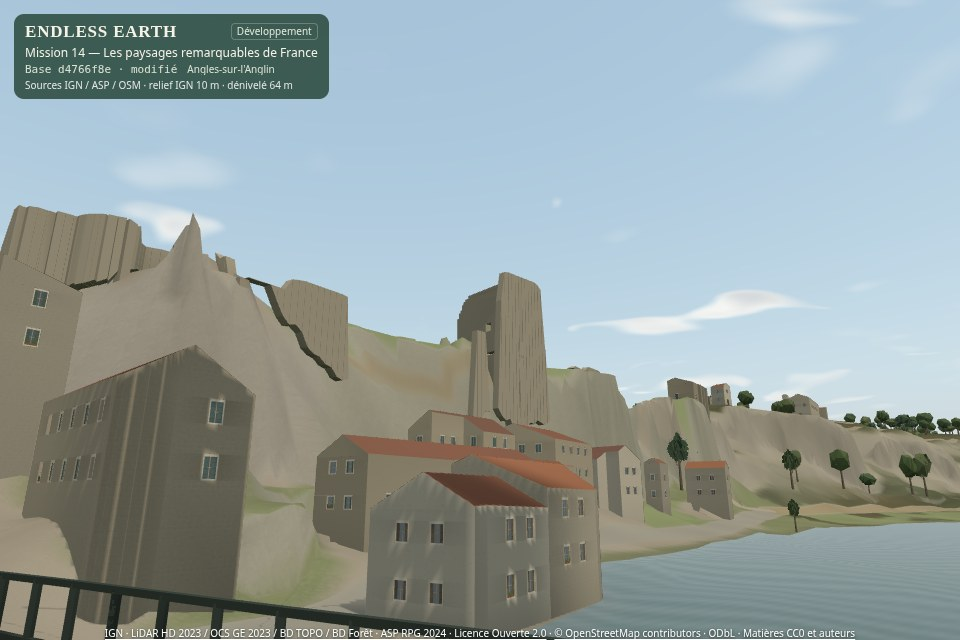
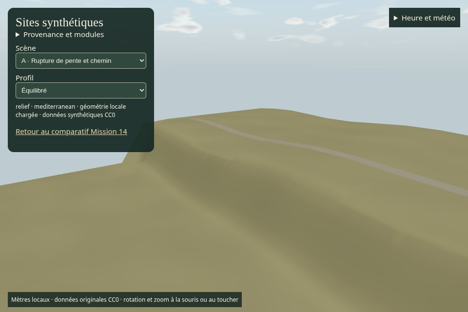
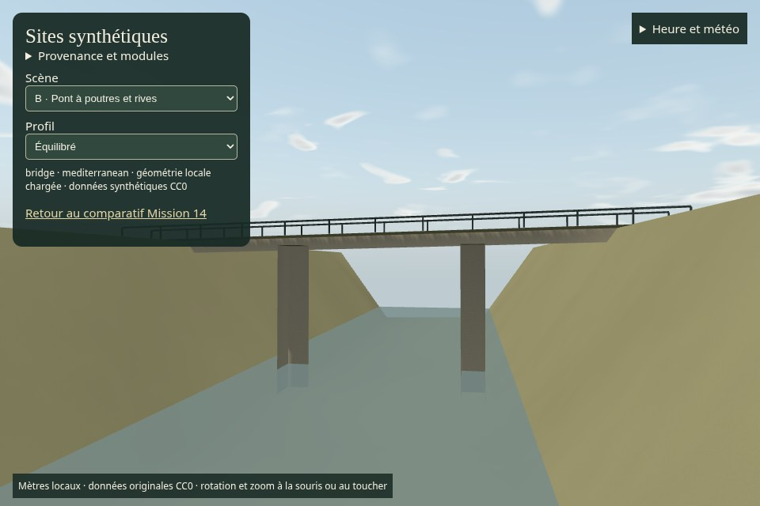
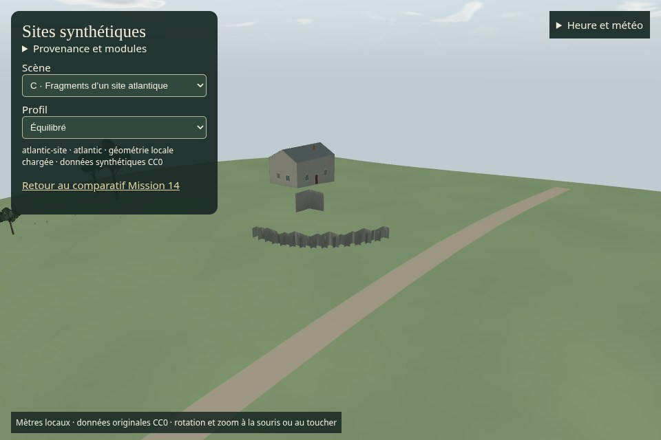
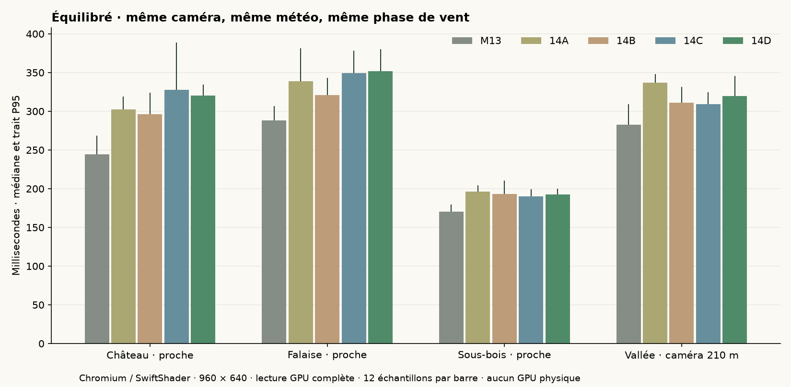
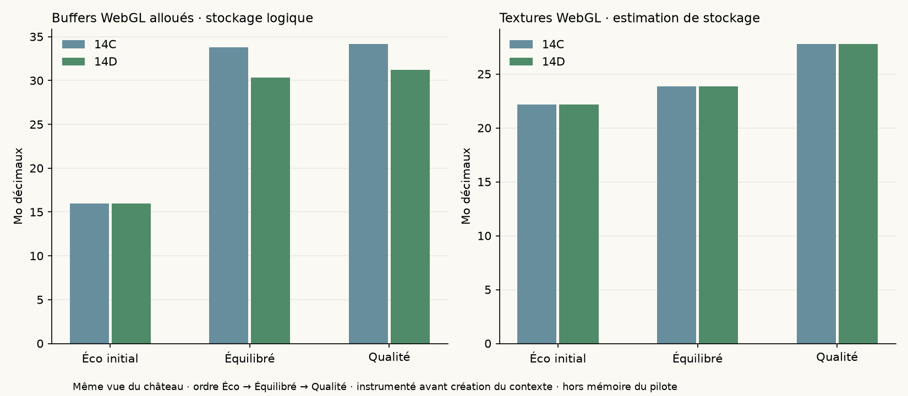

14D · validation artistique finale attendueLes paysages remarquables de France
Relief local, patrimoine partiel et ombres proches dans le vrai moteur d’Angles-sur-l’Anglin. Même géographie, mêmes distances et mêmes propriétaires du ciel, du vent et du son.
Rapport complet et reproduction · Planche Mission 13 / 14D · PR #23 en brouillon
0 € · aucune fusion · aucun déploiement · Living Paintings / LP-01 inchangé.
Mêmes points de vue, cinq étapes
Captures du moteur, 960 × 640, FOV 55°, Équilibré, 21 juin 2026 après-midi clair. Matrices de caméra et état climatique complet identiques, y compris la phase du vent. Ces stations ne constituent pas un trajet continu. Les dates, caméras, versions et sources sont dans les métadonnées.


Mission 1314DLes vues éloignées, les berges et les scènes masquées sont conservées : le gain y reste parfois discret. Les volumes du château, les arches et les matériaux restent en partie interprétés.
Promenade et essai de 30 minutes
1802.4 secondes réelles, 1478.0 m cumulés hors déplacements de station, 11474 images instrumentées. Contact au support : écart maximal 0.000000 m ; aucune erreur JavaScript/WebGL constatée. Les profils, heures et météos changent par les commandes existantes.
Parcours continu sur le réseau OSM de référence, puis retours sur les mêmes points. Aucun raccourci ni raccord de chemin inventé. Le pont n’est pas relié à ce départ par une approche praticable dans les données actuelles : audit du réseau et dégagement du quai dans le maillage reconstruit.
Chapitres réels de la session prolongée
- 0.0 min · Parcours OSM continu · 450 m · Équilibré
- 6.0 min · Fin des 450 m continus · pause de contemplation
- 7.0 min · Même parcours en sens inverse · couvert · Équilibré
- 12.0 min · Allers-retours · pluie du soir · Qualité
- 18.0 min · COUPURE · pont distinct · entrée W native
- 20.1 min · Traversée native terminée · pause du pont
- 21.0 min · COUPURE · sous-bois contemplatif · vent · Équilibré
- 24.1 min · COUPURES de streaming entre stations existantes · Éco / Qualité
- 24.1 min · COUPURE streaming explicite vers station 0
- 25.0 min · COUPURE streaming explicite vers station 1
- 26.0 min · COUPURE streaming explicite vers station 2
- 27.1 min · COUPURE streaming explicite vers station 3
- 28.0 min · Retour à la station de départ · matin clair · Équilibré
Traversée native du pont dans une inspection distincte, avec une seule position initiale explicite. Les pauses de forêt et les changements de stations pour le streaming sont également signalés comme coupures. Résumé complet · trace par image · mesures par chapitre.
Branche manuelle vers le château
247,45 m depuis le même départ normal, en 3 min 43 s : Place Aimé Octobre, rue du Four Banal, rue terrier du château, rue du Château et Tranchée des Anglais. Entrée W native, arrêts aux angles et deux pauses de caméra, sans déplacement de position imposé. Les voies secondaires et marches restent exclues de l’AutoWalk. Tracé source · Vérification du parcours.
Trois scènes entièrement synthétiques
Aucun autre site réel n’est revendiqué. Les trois scènes réutilisent le relief, le chargement local, la navigation et le calcul d’éclairage communs. Le style régional reste indépendant des coordonnées. Ouvrir les démonstrations interactives sur le serveur de développement.

A · Rupture de pente, TIN local et route. Physique et rendu vérifiés sur les mêmes triangles.
B · Pont à poutres de 48 m et tablier de 4 m ; aucun modèle d’arche d’Angles copié.
C · Fragments bas et maison ordinaire en style atlantique. Aucun vrai monument.Audit physique · Chargements, déchargements et replis · Données synthétiques CC0.
Coût réel du compromis
SwiftShader est un moteur logiciel. Ces chiffres incluent la lecture GPU complète ; ils ne mesurent ni un téléphone Android ni une carte graphique physique. Aucun 60 FPS annoncé. Les médianes et P95 décrivent douze échantillons par combinaison ; ils ne sont pas des intervalles de confiance.

Temps médians / P95 en millisecondes, tous profils
| Profil / vue | M13 | 14A | 14B | 14C | 14D |
|---|
| eco · Château · proche | 203.4 / 223.9 | 267.5 / 290.2 | 259.0 / 281.8 | 249.2 / 272.1 | 236.7 / 269.9 |
|---|
| eco · Falaise · proche | 232.7 / 248.3 | 283.2 / 294.2 | 257.6 / 323.7 | 259.7 / 273.3 | 256.9 / 283.3 |
|---|
| eco · Sous-bois · proche | 147.4 / 157.0 | 175.0 / 218.4 | 165.8 / 196.6 | 162.1 / 173.2 | 146.2 / 162.1 |
|---|
| eco · Vallée · caméra 210 m | 238.7 / 266.6 | 277.2 / 285.8 | 269.2 / 286.0 | 280.4 / 290.6 | 261.9 / 295.3 |
|---|
| balanced · Château · proche | 244.3 / 268.6 | 302.7 / 319.3 | 296.2 / 323.9 | 327.9 / 388.8 | 320.5 / 334.6 |
|---|
| balanced · Falaise · proche | 287.9 / 306.5 | 338.6 / 381.5 | 321.0 / 343.3 | 349.1 / 378.5 | 351.7 / 380.4 |
|---|
| balanced · Sous-bois · proche | 170.1 / 179.8 | 196.4 / 204.1 | 193.5 / 210.5 | 190.0 / 199.4 | 192.7 / 199.8 |
|---|
| balanced · Vallée · caméra 210 m | 282.3 / 309.3 | 337.2 / 348.2 | 311.2 / 331.2 | 309.4 / 324.3 | 319.5 / 345.7 |
|---|
| quality · Château · proche | 248.7 / 265.0 | 305.4 / 343.2 | 299.0 / 359.2 | 327.7 / 358.5 | 324.2 / 351.6 |
|---|
| quality · Falaise · proche | 297.0 / 318.1 | 346.2 / 365.1 | 321.8 / 335.0 | 337.9 / 359.0 | 369.2 / 380.5 |
|---|
| quality · Sous-bois · proche | 172.4 / 177.7 | 200.3 / 216.0 | 192.9 / 222.8 | 193.0 / 208.6 | 201.3 / 210.2 |
|---|
| quality · Vallée · caméra 210 m | 290.4 / 309.0 | 327.3 / 353.3 | 321.0 / 336.4 | 314.8 / 331.3 | 339.8 / 369.0 |
|---|

Mémoire des quatre vues · 14C → 14D
| Profil / vue | Buffers WebGL · Mo | Textures estimées · Mo | Index local D · Mo |
|---|
| eco · Château · proche | 15.97 → 15.97 | 22.18 → 22.18 | 0.000 |
|---|
| eco · Falaise · proche | 20.94 → 20.94 | 22.18 → 22.18 | 0.000 |
|---|
| eco · Sous-bois · proche | 22.71 → 22.71 | 22.18 → 22.18 | 0.000 |
|---|
| eco · Vallée · caméra 210 m | 25.42 → 25.42 | 22.18 → 22.18 | 0.000 |
|---|
| balanced · Château · proche | 33.78 → 30.33 | 23.84 → 23.84 | 0.524 |
|---|
| balanced · Falaise · proche | 35.90 → 32.44 | 23.84 → 23.84 | 0.524 |
|---|
| balanced · Sous-bois · proche | 34.50 → 31.05 | 23.84 → 23.84 | 0.524 |
|---|
| balanced · Vallée · caméra 210 m | 34.46 → 31.01 | 23.84 → 23.84 | 0.524 |
|---|
| quality · Château · proche | 34.15 → 31.22 | 27.77 → 27.77 | 1.049 |
|---|
| quality · Falaise · proche | 35.90 → 32.97 | 27.77 → 27.77 | 1.049 |
|---|
| quality · Sous-bois · proche | 34.12 → 31.19 | 27.77 → 27.77 | 1.049 |
|---|
| quality · Vallée · caméra 210 m | 34.46 → 31.53 | 27.77 → 27.77 | 1.049 |
|---|
La version D réutilise les sélections statiques et les instances de couronnes pendant les mises à jour du vent, décode les indices de cellules à la demande et dimensionne leur tampon local par croissance bornée. Le filtrage validé en C et ses budgets sont conservés. Le filtrage matériel essayé ne donnait pas de gain suffisamment convaincant.
Chargement, triangles, appels, mémoire et caches · échantillons complets · égalité des conditions · tailles des packs · dérivé d’éclairage inchangé · sources et version figée.
Photographies de référence et incertitudes
Photographies non calibrées, utilisées pour lire la silhouette et les matières. Elles ne donnent pas de mesures exactes ni de droits sur un modèle 3D. Les ruines restent partielles, les arches interprétées, et l’eau ne reçoit aucun nouveau niveau hydrologique.
Terrain IGN LiDAR HD et BD TOPO : Licence Ouverte 2.0. © OpenStreetMap contributors : ODbL 1.0. Sources, acquisition, incertitudes et droits détaillés dans les archives A/B du rapport.
Validation artistique finale
- Les falaises paraissent-elles plus fidèles ?
- Le château est-il davantage reconnaissable ?
- Le pont semble-t-il construit et praticable ?
- Les ombres donnent-elles plus de profondeur ?
- La lumière reste-t-elle naturelle ?
- Le jeu reste-t-il fluide sur votre matériel ?
- Les collisions restent-elles fiables ?
- A-t-on davantage envie de se promener ?
Les essais techniques ne répondent pas à votre place. La PR reste en brouillon ; aucune fusion ni aucun déploiement avant accord explicite.